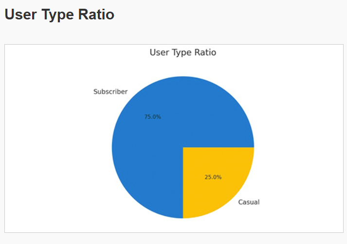
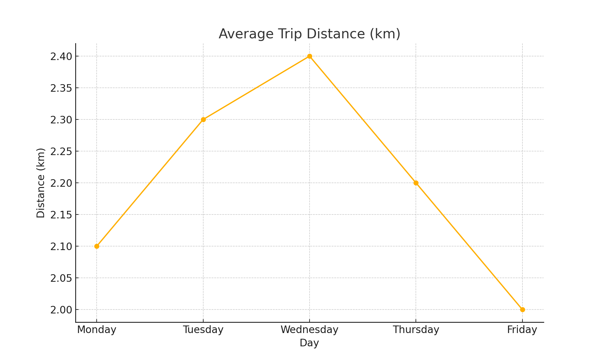
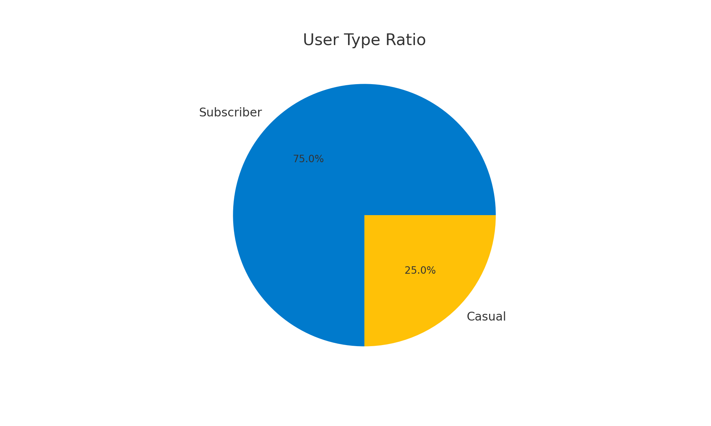

Trip Count by Day of Week

This bar chart shows how trip frequency varies across weekdays. Monday had the highest number of trips, with usage dipping midweek and recovering slightly over the weekend.
Trip Count by Hour of Day

Displays hourly trends to highlight peak usage, typically around commute times (7–9 AM and 5–7 PM).
User Type Ratio
A pie chart showing the proportion of subscribers vs casual users. Most users are subscribers, indicating regular commuting usage.
Average Trip Distance
Line graph representing average trip distances. Wednesday has the highest, with fluctuations suggesting different commuting behavior across the week.
Subscriber vs Casual (Alternate Pie Chart)
This alternative visualization supports the main user ratio data and confirms consistency in user segmentation.